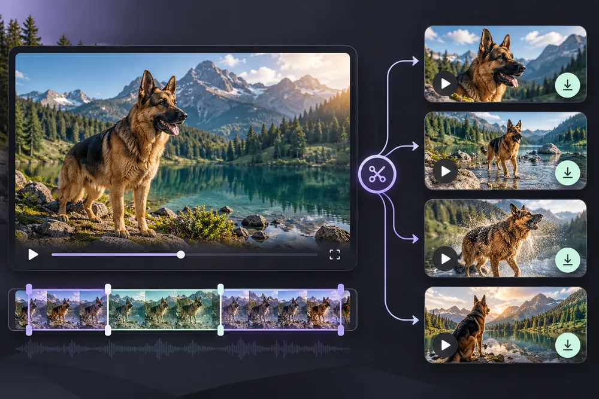
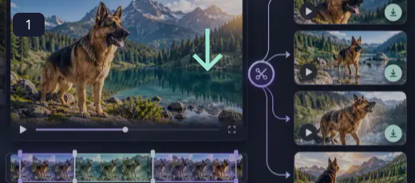
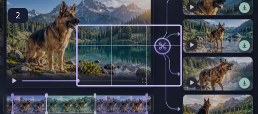
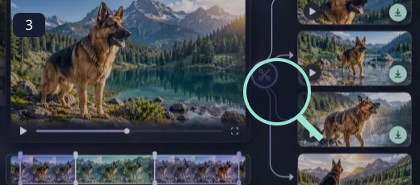
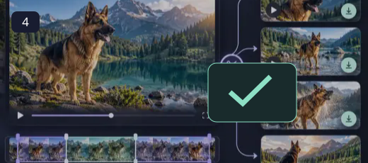

Video Splitter
Split one video into several time ranges and download each MP4.
A small video task should not require rebuilding a whole project. Choose the part you need, remove an unnecessary audio track or change the pace of a moment, then save a separate copy. Still-picture animation uses an intentional camera move over the photo; it does not invent facial motion or turn a portrait into a talking person.
How to use Video Splitter ↓How to use Video Splitter

Choose your source file
Open a supported file from your device. The original is kept separate from the exported result.

Adjust the tool settings
Split one video into several time ranges and download each MP4. Encoding runs on your device with a downloadable FFmpeg engine. Large or long videos can exceed browser memory, particularly on phones. Keep the tab open, work with shorter clips when possible and use Cancel to stop an encoding job. Changing speed also changes duration; the audio tempo is adjusted to follow the chosen playback rate.

Review the preview or selected region
Use the preview to check composition, readability and the selected dimensions. Brush and crop controls accept touch as well as mouse input.

Export a separate result
Use Export or the individual download links. Compare the saved file with the source and keep the original for future edits.
A shorter route from footage to a useful clip
Encoding runs on your device with a downloadable FFmpeg engine. Large or long videos can exceed browser memory, particularly on phones. Keep the tab open, work with shorter clips when possible and use Cancel to stop an encoding job. Changing speed also changes duration; the audio tempo is adjusted to follow the chosen playback rate.
- Split one video into several time ranges and download each MP4.
- Use a dedicated URL and controls tailored to this operation.
- Keep the source separate from the downloaded result.
- Read visible output dimensions, format and processing status.
Encoding runs on your device with a downloadable FFmpeg engine. Large or long videos can exceed browser memory, particularly on phones. Keep the tab open, work with shorter clips when possible and use Cancel to stop an encoding job. Changing speed also changes duration; the audio tempo is adjusted to follow the chosen playback rate.
Questions, answered
What does Video Splitter do?
Split one video into several time ranges and download each MP4.
Does it change my original file?
No. The workspace exports a separate result. Keep the source if you may want another version.
What should I check before using the result?
Encoding runs on your device with a downloadable FFmpeg engine. Large or long videos can exceed browser memory, particularly on phones. Keep the tab open, work with shorter clips when possible and use Cancel to stop an encoding job. Changing speed also changes duration; the audio tempo is adjusted to follow the chosen playback rate.
Are there any practical limits?
Very large files can exceed browser memory. Specialized source formats need a supported decoder, and the saved image may not retain source metadata.
Will this replace my original file?
The tools create a separate output. Keep the original until you have checked the exported file; the site does not provide cloud project backups.
Can I publish the result?
Use source media you own or have permission to edit. Check the destination’s requirements and the rights of anyone shown before publishing.